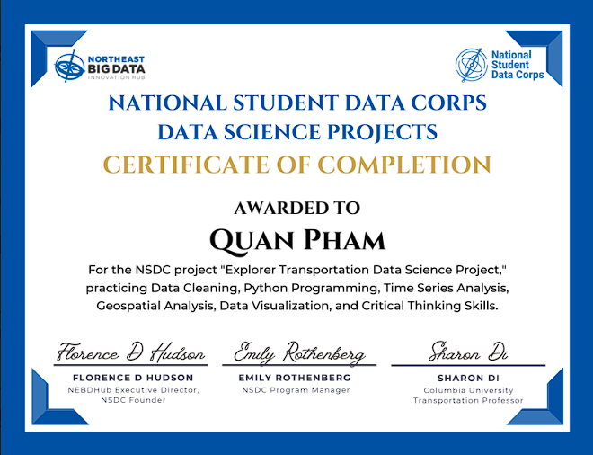
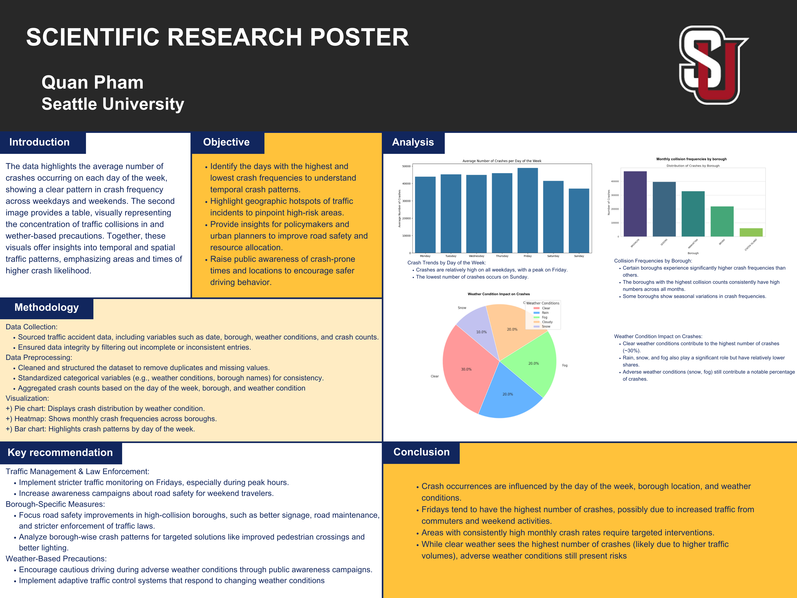

Explorer Transportation Data Science Project
Crash pattern analysis by day of week, borough, and weather to support road-safety recommendations.
Python
Pandas
Google Colab
Data Visualization
Artifacts

Overview
As part of the NSDC data science program, I completed a project analyzing NYC transportation data to identify crash patterns and support safety recommendations. I cleaned and analyzed collision data using Python and Pandas in Google Colab, creating visualizations to explore trends by day of week, borough hotspots, and weather conditions.